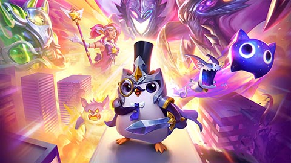

Juegos
Riot Games es una compañía de videojuegos que se dedica a crear y publicar juegos en línea. Algunos de los juegos más populares de Riot Games incluyen:
-
League of Legends

League of Legends es un juego en equipos de cinco contra cinco. El objetivo del juego es destruir el nexo del equipo enemigo, que es una estructura que se encuentra en la base del equipo enemigo. Los jugadores pueden elegir entre más de 100 campeones diferentes, cada uno con sus propias habilidades únicas. Los jugadores pueden ganar oro matando súbditos enemigos, monstruos neutrales y campeones enemigos. El oro se puede utilizar para comprar objetos que mejoran las habilidades de los campeones.
-
Valorant
Valorant es un juego de disparos en primera persona que se juega en equipos de cinco contra cinco. El objetivo del juego es plantar una bomba en un sitio y protegerla hasta que explote. Los jugadores pueden elegir entre más de 10 agentes diferentes, cada uno con sus propias habilidades únicas. Los jugadores pueden ganar oro matando enemigos, plantando o desactivando la bomba, y completando objetivos. El oro se puede utilizar para comprar armas y habilidades.
-
Teamfight Tactics
TFT es un juego de estrategia en línea todos contra todos. El objetivo del juego es construir un equipo de campeones y luchar contra otros equipos. Los jugadores pueden elegir entre más de 50 campeones diferentes, cada uno con sus propias habilidades. Los jugadores pueden ganar oro matando monstruos neutrales y campeones enemigos. El oro se puede utilizar para comprar objetos que mejoran las habilidades de los campeones.
-
Legends of Runeterra

Legends of Runeterra es un juego de cartas coleccionables en línea. El objetivo del juego es construir un mazo de cartas y luchar contra otros jugadores. Los jugadores pueden elegir diferentes campeones.
-
LOL: Wild Rift

Wild Rift es la version mobile del League of Legends. Forma un equipo con tus amigos y poned a prueba vuestras habilidades en un MOBA de combates 5v5. La competición de alto nivel que andás buscando: diseñada específicamente para móvil y consola, con controles rediseñados y con partidas más simples.
Forge
Somos una distribuidora centrada en los jugadores y desarrolladores.
Forge es una plataforma de distribución de juegos que permite a los desarrolladores publicar sus juegos en línea y llegar a una audiencia más amplia.
- Ruined King - La historia gira en torno a varios personajes de LoL que tendrán que luchar contra una calamidad llamada Harrowing.
- CONVERGENCE - Es un juego de plataformas narrativo en 2D con dinámicos combates y exploración gracias a la habilidad de Ekko para viajar por el espacio-tiempo.
- Song of Nunu - En esta aventura, os adentraréis en el idílico pero traicionero mundo de Freljord como Nunu, un niño enfrascado en la tarea de encontrar a su madre.
- Hextech Mayhem - En este veloz juego de avance rítmico. Juega como Ziggs, el yordle experto en Hexplosivos, ¡mientras arrasas con los vecindarios de Piltóver!
- The MageSeeker - Juega como Sylas, un mago que se liberó después de pasar años en cautiverio. Empuña las cadenas, que en algún momento te retuvieron, para liberar Demacia de la tiranía de los cazadores de magos.
¡Despierta, invocador! Soy Lucian, el Purificador, y en la siguiente sección te adentrarás en el emocionante mundo de los e-sports. Hazme clic y prepárate para sumergirte en la competencia y la pasión de los jugadores profesionales, los torneos internacionales y las estrategias más sorprendentes. Desde League of Legends hasta otros juegos populares, descubre cómo los e-sports están redefiniendo el mundo del entretenimiento. Continúa tu viaje y descubre lo que el futuro nos depara en el apasionante mundo de los deportes electrónicos. ¡El siguiente nivel te espera!